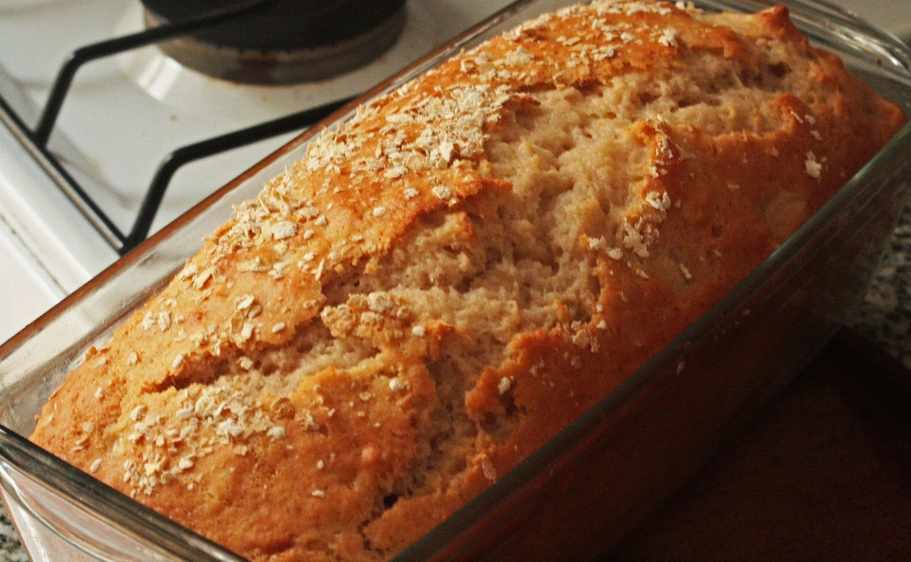
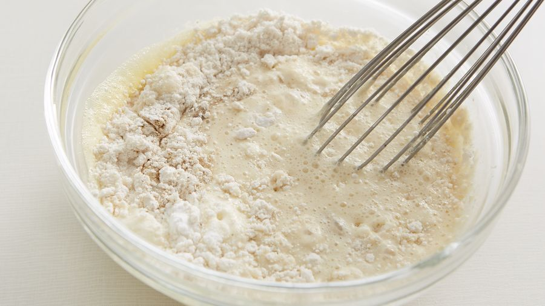
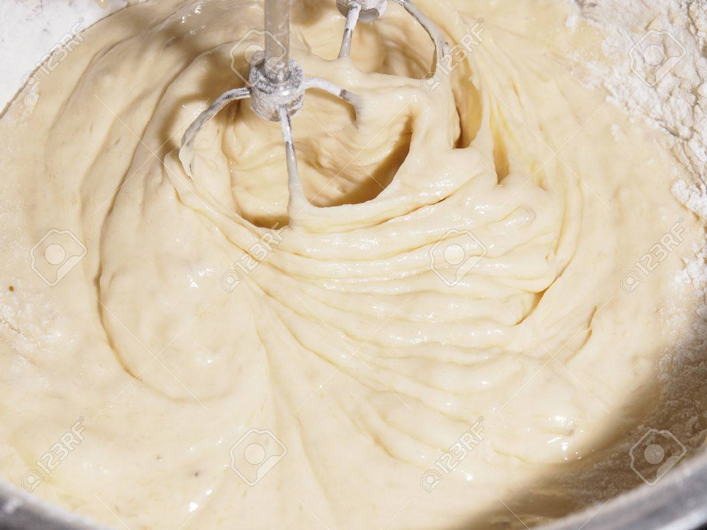

Paso a paso de una receta fácil. No apta para Vegetarianos

Pasos a seguir
Si NO van a este orden, puede fallar
- Batimos los 2 huevos con batidora eléctrica con el azúcar. Agregarle el aceite. Minimo 3 minutos de batido.
- CONSEJO: Si batimos primero la clara y luego la yema ayuda a que sea más esponjoso
- Agregar luego la leche. ¡Cuidado que Salpica! y la ralladura de limón.
- Agregar la harina poco a poco.

- Mientras se termina de batir y mezclar bien, recomendamos lavar las manzanas y cortarlas. Si usaron 2 entonces una la cortan entera en cuadrados pequeños. La otra la dividen 2 mitades y cortan una mitad de la misma manera (cuadraditos pequeños) y la otra a lo largo para decorar al final.

- Agregar a la mezcla las manzanas en cuadraditos.
- Colocar la mezcla en una budinera, previamente enmantecada y enharinada. Decorar con las manzanas cortadas por encimacon un poco de azúcar
- Cocinar al horno medio entre 40-45 minutos aproximadamente.